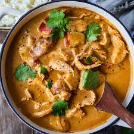
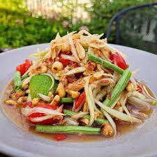

This site shows the best Thai dishes in the creator's opinion. Clicking the pictures will lead to a website that contains recipe of the food.
Pad Thai

Pad Thai is a classic Thai stir-fried noodle dish made with rice noodles, eggs, tofu or shrimp, bean sprouts, and scallions, tossed in a tangy-sweet sauce of tamarind, fish sauce, and palm sugar, and typically garnished with crushed peanuts and lime.
Tom Yum Goong

Tom Yum Goong is a spicy and sour Thai soup made with shrimp, lemongrass, galangal, kaffir lime leaves, chilies, and lime juice, known for its bold, aromatic flavor and refreshing, citrusy heat.
Pad See Ew

Pad See Ew is a popular Thai stir-fried noodle dish made with wide rice noodles, soy sauce, garlic, Chinese broccoli, and your choice of meat or tofu, known for its savory, slightly sweet flavor and tender texture.
Massaman Curry

Massaman curry is a rich and mildly spiced Thai curry made with tender meat, potatoes, peanuts, and coconut milk, blending Thai flavors with Indian spices like cinnamon and cloves for a creamy, slightly sweet, and aromatic dish.
Som Tam

Som tam is a vibrant and spicy Thai salad made from shredded green papaya, garlic, chilies, lime juice, fish sauce, and palm sugar, often mixed with tomatoes, green beans, and peanuts for a bold balance of sweet, sour, salty, and spicy flavors.